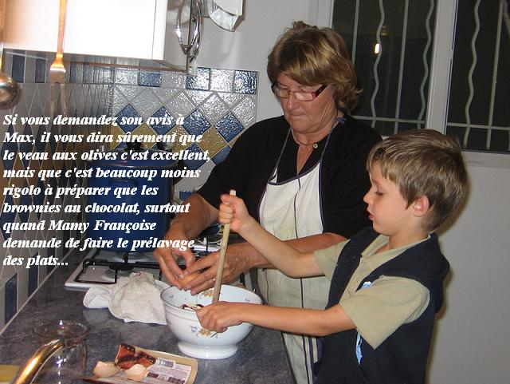

Recette n°102 :
Veau corse aux olives comme le prépare
Marie-Hélène d'Anglet

Ingrédients (pour 4
personnes) :
- 1 kg de poitrine de veau coupée en morceaux
- 125 g d'olives vertes dénoyautées
- 125 g de petits lardons, fumés ou non
- 400 g de carottes
- 400 g de champignons en boîte
- 1 gros oignon jaune
- 10 petits oignons blancs
- 3 gousses d'ail
- 1 cuiller à soupe de concentré de tomate
- 1 cuiller à café de maïzena
- 1 verre de vin blanc
- 1 cuiller à soupe d'huile
- thym, romarin, laurier, sel, poivre
Préparation :
éplucher et émincer le gros oignon et les gousses d'ail
- nettoyer les carottes, les débiter en rondelles
- faire revenir viande en morceaux et lardons dans l'huile
- ajouter ail et oignon, remuer, laisser blondir
- ajouter tomate et farine, remuer
- mouiller avec vin blanc et autant d'eau, remuer
- mettre thym, romarin, laurier, sel, poivre
- couvrir la cocotte et laisser mijoter une heure
- faire bouillir une minute les olives dans de l'eau afin qu'elles
perdent leur amertume, égoutter et réserver
- ajouter à la cocotte olives, petits oignons et carottes
- laisser mijoter encore une heure
Observations :
1 - Recette faite le 1er novembre 2006 à Porticcio et servie
avec
des spaghetti ; excellente !
2 - Le 2 décembre 2006 se tenait à Rennes une session des
rencontres culinaires lavalloises regroupant 13 convives (Denise et
Jean-Claude venus spécielement de Belleuse, Annie et Daniel
venus de Laval, Andrée et Michel venus de Laval aussi, Claire et
Maurise ainsi que Julie venus de Villiers-Charlemagne, Pierre et Anne
venus de Vitré, Mamy et moi ; nous avons fait à cette
occsion une variante de cette recette qui est donnée plus loin
(recette n°111).